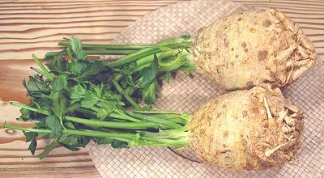

Celery Root

[Celeriac, Knob celery, Turnip rooted celery, Apium graveolens
var rapaceum]
Developed in Europe during the Renaissance, this form is particularly
popular in France, Germany, Poland, Russia and Turkey. Once little
known in North America, celeriac has lately become more widely
available, with California a major producer. The part eaten is not
actually a root, but a swollen stem, from which the leaves sprout.
These "roots" range in size from 7 ounces to over 2 pounds. The larger
of the photo specimens was 6-1/2 inches long, 4-1/4 inches diameter
and weighed 2 pounds.
More on Parsley & Aralias.
A strongly aromatic vegetable, celery root is useful in soups, stews,
mashed potatoes, and various cooked and uncooked salads. The leafy tops,
if included and in good condition, are an excellent flavoring when making
soup stock, much stronger than regular Pascal celery.
Buying:
While many produce markets and supermarkets
here in Southern California stock these, they may be less available in
regions that do not have large ethnic populations. Look for very firm
roots with stems and leaves that are still green and unwilted. Buy
medium size roots with many stems, as very large ones, and especially
ones with just one thick stem coming out of them, tend to be very
fibrous and totally unfit for salads.
Storing:
These will keep for weeks, even a month or more,
in the crisper drawer of your refrigerator. Wrap loosely in plastic and
make sure there's air circulation so they can breathe.
Prep:
Celery roots are rather hard and daunting in
appearance, but they peel easily with a swivel vegetable peeler. In
the grungier areas it'll take several strokes of the peeler to clean
them up, and possibly a little work with a sharp pointed knife. An easy
and safe way to start cutting a large one is to drive a sharp Chinese
cleaver knife through it lengthwise, with a soft faced mallet. Roots to
be used raw are often grated on the large hole side of a box grater, or
they can be cut into shavings with your swivel peeler, or narrow strips
with a julienning peeler.
Cooking:
These "roots" are often cooked whole and
unpeeled in boiling water to preserve their flavor. Take care not to
overcook them, they cook faster than you might think, and are done rather
suddenly. Check frequently with a sharp skewer - as soon as it doesn't
encounter a hard center they're done.
When done, they are often cut into narrow juliennes. They are too soft
to use julienning tools, so just slice them 1/8 inch thick, then skew the
slices on your cutting board so they overlap and cut crosswise into strips
- very easy.
py_celerrz 100204 - www.clovegarden.com
©Andrew Grygus - agryg@clovegarden.com - Photos ©
cg1 - Linking to and non-commercial use
of this page permitted